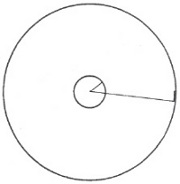
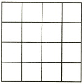
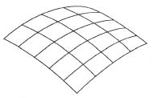

Birazdan üzerinde duracağımız örnek, düşen yükseleç örneğinden de gerçeksizdir (fantastic). Yeni bir probleme yaklaşmamız gerekiyor. Bu problem, genel ilişkinlik (relativity) teorisi ile geometri arasındaki bağlantı problemidir. Dünyamızdaki gibi üç-boyutlu yaratıkların bulunmadığı, yalnız iki-boyutlu yaratıkların yaşadığı bir dünyayı tanımlayarak işe başlayalım. Sinema, iki-boyutlu bir perdede hareket eden yaratıklara bizi alıştırmıştır. Şimdi bu görüntülerin, yani perdedeki oyuncuların, gerçekten canlı olduğunu, düşünme güçleri bulunduğunu, kendi öz bilimlerini yaratabildiğini, iki-boyutlu perdenin onlar için uzay yerine geçtiğini düşünelim. Biz dört-boyutlu bir uzayı nasıl göz önüne getiremiyorsak, bu yaratıklar da üç-boyutlu bir uzayı somut olarak göz önüne getirebilecek durumda değildirler. Doğru bir çizgiyi eğriltebilirler: çemberin ne olduğunu bilirler, ama bir küre yapamazlar, çünkü bu, iki-boyutlu perdelerinin dışına çıkmaları demektir. Biz de buna benzer bir durumdayız. Çizgileri ve yüzeyleri eğriltebilir ve bükebiliriz, ama eğrilmiş ve bükülmüş bir üç-boyutlu uzayı göz önüne getiremeyiz.
Görüntü yaratıklarımız, yaşayarak, düşünerek ve deneyerek, sonunda iki-boyutlu Öklid geometrisini gereği gibi öğrenebilirler. Böylece, bir üçgenin iç açıları toplamının 180 derece olduğunu saptayabilirler. Ortak merkezli, biri çok küçük ve öbürü büyük iki çember çizebilirler. Böyle iki çemberin çevreleri arasındaki oranın, yarıçapları arasındaki orana eşit olduğunu bulurlar. Bu da Öklid geometrisine özgü bir sonuçtur. Perde sonsuz büyük olsaydı, bu görüntü varlıklar, hep dosdoğru gitmekle çıkış noktalarına asla geri dönemeyeceklerini de anlarlardı.
Şimdi bu iki-boyutlu yaratıkların yaşadığı koşulların değiştirildiğini düşünelim. Dışarıdan, “üçüncü boyut”tan biri, onları perdeden alıp yarıçapı çok büyük olan bir kürenin yüzeyine bıraksın. Görüntü yaratıklar, küre yüzeyinin tümüne oranla çok küçükseler, uzak ulaşım araçları yoksa, çok uzağa gidemiyorlarsa, bu değişikliğin farkına varmayacaklardır. Küçük üçgenlerin iç açıları toplamı gene 180 derecedir. Ortak merkezli iki küçük çemberin çevreleri arasındaki oran ile yarıçapları arasındaki oran gene eşittir. Doğru bir çizgi boyunca ilerleyerek çıktıkları noktaya dönemezler.
Ama bu görüntü varlıklar, teorik ve teknik bilgilerini zamanla geliştirsinler. Büyük uzaklıkları çabucak aşmalarını sağlayacak ulaşım araçları bulsunlar. O zaman, dosdoğru yolculuk ederlerse, sonunda çıktıkları noktaya döndüklerini saptayacaklardır. “Dosdoğru”, kürenin büyük çemberi boyunca demektir. Görüntü varlıklar, ortak merkezli iki çember arasındaki oranın, çemberlerden birinin yarıçapı küçük ve öbürününki büyükse, yarıçapları arasındaki orana eşit olmadığını da bulacaklardır.
İki-boyutlu yaratıklarımız tutucu iseler, uzaklara gidemedikleri ve Öklid geometrisinin gözlenen olgulara uygun düştüğü çağlarda yaşamış kuşaklardan beri Öklid geometrisine göre düşünmeyi öğrenmişlerse, yaptıkları ölçümlerin sonuçları bu geometriye aykırı olmakla birlikte, ondan vazgeçmemek için elbette her türlü çabayı göstereceklerdir. Bu çelişkinin sorumluluğunu fiziğe yüklemeye çalışabilirler. Bazı fiziksel gerekçeler, söz gelimi çizgilerin biçimini bozan ve Öklid geometrisinden sapmaya yol açan sıcaklık farkları bulmaya çalışabilirler. Ama eninde sonunda bu olayları tanımlamanın çok daha mantıklı ve inandırıcı bir yolu olduğunu saptamaları gerekir. Sonunda, öğrendikleri ilkelerden farklı geometri ilkeleri olan bir dünyada yaşadıklarını anlayacaklardır. Dünyalarını somut olarak göz önüne getirememekle birlikte, onun bir kürenin iki-boyutlu yüzeyi olduğunu anlayacaklardır. Çabucak yeni geometri ilkeleri öğreneceklerdir. Bu ilkeler Öklid geometrisininkilerden farklı olabilir, ama gene de onların iki-boyutlu dünyası için aynı ölçüde tutarlı ve mantıklı bir biçimde formülleştirilebilir. Eski Öklid geometrisi, gözlenen olgulara uymadığı için, küre geometrisini öğrenerek yetişen yeni kuşaklara daha karmaşık ve düzmece görünecektir.
Dünyamızın üç-boyutlu yaratıklarına dönelim.
Üç-boyutlu uzayımızın Öklidsel karakterde olduğunu söylemekle anlatılmak istenen nedir? Anlatılmak istenen, doğruluğu mantıklı olarak gösterilmiş bütün Öklid geometrisi teoremlerinin gerçek deneyle de doğrulanabileceğidir. Eğilip bükülmeyen cisimleri ya da ışık ışınlarının yardımı ile, Öklid geometrisinin düşünselleştirilmiş nesnelerine benzeyen nesneler yapabiliriz. Bir cetvelin kenarı ya da bir ışık ışını, doğruya karşılık olur; ince, eğilip bükülmeyen çubuklardan yapılmış bir üçgenin iç açıları toplamı 180 derecedir; ince eğilip bükülmeyen telden yapılmış ortak merkezli iki çemberin yarıçaplarının oranı, çevrelerinin oranına eşittir. Böyle yorumlanırsa, Öklid geometrisi fiziğin bir bölümü olur. Ama bu, çok basit bir bölümdür.
Ama bu konuda aykırılıklar bulunduğunu, örneğin, çeşitli gerekçelerle eğilip bükülmez sayılmaları gerekmiş çubuklardan yapılı büyük bir üçgenin iç açıları toplamının 180 derece olmadığını düşünebiliriz. Öklid geometrisindeki nesnelerin somutlaştırılarak gösterilmesi düşüncesine alışageldiğimiz için, çubuklarımızın böyle beklenmedik aykırı davranışlarını belki de fiziksel bir kuvvete yorarız. O kuvvetin fiziksel doğasını ve öbür görüngülere etkisini bulmaya çalışırız. Öklid geometrisini kurtarmak için nesneleri eğilip bükülmez olmamakla, Öklid geometrisindekilere tıpatıp uymamakla suçlarız. Öklid geometrisinin gerektirdiği gibi davranan cisimler araştırırız. Ama Öklid geometrisini ve fiziği birleştirip basit ve tutarlı bir bütün elde etmeyi başaramazsak, uzayımızın Öklidsel olduğu düşüncesinden vazgeçip, uzayımızın geometrik karakteri üzerine daha genel varsayımlara dayanan daha inandırıcı bir gerçeklik tanımına ulaşmaya çalışmamız gerekir.
Bunun gerekliliği, gerçekten ilişkinci (relativistic) bir fiziğin Öklid geometrisine dayandırılamayacağını gösteren düşünselleştirilmiş bir deneyle açıklanabilir. Düşünüşümüz, süredurumlu KS ve özel ilişkinlik (relativity) teorisi üzerine şimdiye dek öğrenilen sonuçları gösterecektir.
Büyük bir disk düşününüz. Diskin üzerine, ortak merkezli, biri çok küçük ve öbürü çok büyük iki çember çizilmiş olsun. [Şekil-66] Disk hızla dönüyor. Disk, dışındaki bir gözlemciye ilişkin (relative) dönüyor. Ve diskin üzerinde de bir gözlemci (iç gözlemci) bulunuyor. Bundan başka, dış gözlemcinin KS’sinin süredurumlu bir KS olduğunu varsayıyoruz. Dış gözlemci, kendi süredurumlu KS’sinde, kendi KS’sinde duran, ama dönen diskteki çemberlere tıpatıp uyan, biri küçük ve öbürü büyük iki çember çizebilir. Onun KS’si süredurumludur, onun için orada Öklid geometrisi geçerlidir. Bundan dolayı, o, çemberlerin çevreleri arasında oranın yarıçapları arasındaki orana eşit olduğunu bulacaktır. Ya diskteki gözlemci? Onun KS’si, klasik fizik ve özel ilişkinlik (relativity) teorisi bakımından yasak bir KS’dir. Ama fizik yasalarına her KS’de geçerli bir biçim vermek istiyorsak, diskteki gözlemci ile dış gözlemciye aynı önemi vermeliyiz. Biz, dışarıdan, iç gözlemciye bakıyor ve onun dönen diskteki çemberlerin çevrelerini ve yarıçaplarını ölçüp saptamaya çalıştığını görüyoruz. Bu işi dış gözlemcinin kullandığı aynı küçük ölçme çubuğu ile yapıyor. “Aynı”, ya gerçekten aynı, yani, dış gözlemcinin kullanıp kendi eli ile içeri verdiği çubuk, ya da, bir KS’de dururken uzunlukları eşit iki çubuktan biri anlamındadır.

[Şekil-66]
Disk üzerindeki [iç] gözlemci, küçük çemberin yarıçapını ve çevresini ölçmeye başlıyor. Onun bulacağı sonuç, dış gözlemcinin bulacağı sonucun aynı olmalıdır. Diskin dönme ekseni merkezden geçmektedir. Diskin merkeze yakın kesimlerinin dönme hızı daha küçüktür. Çember yeterince küçükse, klasik mekaniğe güvenle başvurur ve özel ilişkinlik (relativity) teorisini önemsemeyebiliriz. Bu, iç ve dış gözlemciler için çubuğun uzunluğu aynıdır, iç ve dış ölçümlerin sonucu gözlemcilerin ikisi için de aynı olacak demektir. Diskteki gözlemci şimdi büyük çemberin yarıçapını ölçüyor. Yarıçapın üzerine koyduğu çubuk, dış gözlemci için, hareket etmektedir. Bununla birlikte, hareketin yönü çubuğa dik olduğu için çubuk kısalmaz ve çubuğun uzunluğu gözlemcilerin ikisi için de aynı olur. Demek ki, şu üç ölçüm gözlemcilerin ikisi için de aynıdır: İki yarıçapın ölçümleri ve küçük çemberin çevresinin ölçümü. Ama dördüncü ölçüm böyle değildir! Büyük çemberin çevre uzunluğu, her gözlemci için farklıdır. Çevre üzerine hareket yönünde konan çubuk, dış gözlemciye, kendi çubuğuna oranla, kısalmış görünecektir. Hız içte kalan çemberinkinden çok daha büyüktür ve bu kısalma hesaba katılmalıdır. Bundan ötürü, özel ilişkinlik (relativity) teorisinin sonuçlarına başvurursak, şu sonuca varırız: Büyük çemberin çevre uzunluğunu ölçen iki gözlemcinin farklı değerler bulması gerekir. İki gözlemcinin ölçtüğü dört uzunluktan yalnız biri gözlemcilerin ikisi için aynı olmadığından, iki yarıçapın oranı, iç gözlemci için, dış gözlemci için olduğu gibi, iki çevrenin oranına eşit olamaz. Bunun anlamı şudur: Diskteki gözlemci, kendi KS’sinde Öklid geometrisinin geçerliğini doğrulayamaz.
Diskteki gözlemci, bu sonucu elde ettikten sonra, Öklid geometrisinin geçerli olmadığı KS’nin sözünü bile etmek istemediğini söyleyebilir. Öklid geometrisinin yıkılışı, onun KS’sini kötü ve yasak bir KS kılan salt (absolute) hareket yüzündendir. Ne var ki o, böyle düşünürken, genel ilişkinlik (relativity) teorisinin ana ilkesini reddetmektedir. Öte yandan, salt hareketi reddedip genel ilişkinlik (relativity) teorisindeki düşünceyi alıkoymak istersek, bütün fizik, Öklid geometrisinden daha genel bir geometriye dayanılarak kurulmalıdır. Bütün KS’ler eşit uygunlukta sayılırsa, bu sonuca varmaktan kaçınılamaz.
Genel ilişkinlik (relativity) teorisinin gerektirdiği değişiklikleri yalnız uzayda kabul etmekle yetinilemez. Özel ilişkinlik (relativity) teorisinde, her KS’de, hareket etmeyen, aynı ritimli ve zamandaş, yani aynı zamanı andaş olarak (simultaneously) gösteren saatler üzerinde durmuştuk. Bir saat, süredurumsuz (noninertial) bir KS’de ne olur? Gene diskle yapılan düşünselleştirilmiş deneye başvuralım. Dış gözlemcinin, kendi süredurumlu (inertial) KS’sinde, hepsi de aynı ritimli ve zamandaş olan yetkin saatleri var. İç gözlemci böyle saatlerden iki tane alıp birini içteki küçük çemberin ve öbürünü de dıştaki büyük çemberin üzerine koyuyor. İç çemberdeki saatin dış gözlemciye ilişkin (relative) hızı çok küçüktür. Bundan dolayı, onun ritminin dışarıda bulunan saatlerinkinin aynı olacağını güvenle söyleyebiliriz. Oysa büyük çemberdeki saatin hızı oldukça büyüktür ve dış gözlemcinin saatlerine ve dolayısıyla küçük çemberdeki saate oranla onun ritmi değişmiştir. Böylece, dönen iki saatin ritimleri farklı olur, ve özel ilişkinlik (relativity) teorisinin sonuçlarına başvurursak, dönen KS’mizde, süredurumlu KS’dekilere benzer sıralamalar yapamayacağımızı anlarız.
Bu düşünselleştirilmiş deneyden ve daha öncekilerden ne gibi sonuçlar çıkarılabileceğini açıkça göstermek için klasik fiziğe inanan eski fizikçi E. ile genel ilişkinlik (relativity) teorisini bilen çağdaş fizikçi Ç. arasında geçen bir konuşmayı buraya alalım. E., süredurumlu KS’de bulunan dış gözlemcidir. Ç. ise dönen diskte bulunmaktadır.
E.: Öklid geometrisi sizin KS’nizde geçerli değildir. Ölçümlerinize baktım. Sizin KS’nizde, iki çevrenin oranı ile iki yarıçapın oranı eşit değil. Bunu kabul ediyorum. Ama bu, sizin KS’nizin bir başvuru (reference) sistemi olarak kullanılamayacağını gösterir. Oysa benim KS’m süredurumlu karakterdedir, ve ben, Öklid geometrisine güvenle başvurabilirim. Diskiniz salt (absolute) hareket durumundadır ve, klasik fizik bakımından, yasak bir KS oluşturmaktadır. Bu KS’de mekanik yasaları geçerli değildir.
Ç.: Salt hareketin adını bile işitmek istemiyorum. Benim KS’m tam sizinki kadar iyidir. Benim farkına vardığım şey, diskime ilişkin (relative) dönüşünüzdü. Bütün hareketleri diskimle ilişkili görmemi hiç kimse yasaklayamaz.
E.: Peki ama, sizi diskin merkezinden uzakta tutmaya çalışan garip bir kuvvetin varlığını duymadınız mı? Diskiniz hızlı dönen bir atlıkarınca gibi olmasaydı, gözlediğiniz o iki şey elbette olmazdı. Ne sizi dışarı doğru iten kuvveti fark ederdiniz, ne de KS’nizde Öklid geometrisine başvurulamayacağını anlardınız. Bu olgular, KS’nizin salt hareket durumunda olduğuna sizi inandırmaya yetmez mi?
Ç.: Asla! Sözünü ettiğiniz olguları elbette fark ettim, ama onların ikisinden de sorumlu olan garip bir gravitational alanın diskimi etkilediğine inanıyorum. Diskin dışına doğru yönelmiş olan gravitational alan, benim eğilip bükülmeyen çubuklarımın biçimini bozuyor ve saatlerimin ritimlerini değiştiriyor. Gravitational alan, Öklidsel olmayan geometri, ritimleri farklı saatler, bütün bunlar, benim için birbirleri ile sıkı sıkıya bağlantılıdır. Bütün KS’lere aynı gözle bakarsam uygun bir gravitational alan ile birlikte onun eğilip bükülmeyen çubuklara ve saatlere etkisini de varsaymalıyım.
E.: Peki, sizin genel ilişkinlik (relativity) teorinizin ortaya çıkardığı güçlüklerin farkında mısınız? Ne demek istediğimi fiziksel olmayan basit bir örnekle anlatayım. Paralel sokakları ve onlara dik uzanan paralel caddeleri ile düşünselleştirilmiş bir Amerikan kenti tasarlayınız. Sokaklar ve caddeler arasındaki uzaklık hep aynıdır. Bundan dolayı, blokların büyüklükleri tıpatıp aynıdır. Ve ben, herhangi bir blokun konumunu kolayca tanımlayabilirim. Ama Öklid geometrisi olmadan böyle bir kent kurulamazdı. Demek ki, örneğin bütün yeryüzünü kaplayan düşünsel bir Amerikan kenti kuramayız. Küreye bir göz atıvermek bunu anlamaya yeter. Ama sizin diskinizi kaplayan bir Amerikan kenti de kuramayız. Gravitational alanın, çubuklarınızın biçimlerini bozduğunu ileri sürüyorsunuz. Öklid’in teoremini –yarıçaplar arasındaki oranla çevreler arasındaki oranın eşitliğini– doğrulayamamanız açıkça gösteriyor ki, diskinizin yeterince geniş bir alanını böyle bir sokak-cadde ağı ile kaplamayı denerseniz, eninde sonunda güçlüklerle karşılaşır ve bu işin başarılamayacağını anlarsınız. Dönen diskinizdeki geometri, eğrilmiş bir yüzeydeki geometriye benzemektedir ve onun yeterince büyük bir parçasında böyle bir sokak-cadde ağı kurmak olanaksızdır. Daha fiziksel bir örnek üzerinde duralım: Düzensiz ısıtılmış, yüzeyinin farklı parçaları farklı sıcaklıklarda olan bir düzlem var. Isınınca uzunlukları artan demir çubuklarla, şekildeki gibi düzgün bir ağ döşeyebilir misiniz? [Şekil-67] Elbette hayır! Sizin “gravitational alanınız” sıcaklık değişmesinin demir çubuklara oynadığı oyunun aynısını sizin çubuklarınıza oynar.

[Şekil-67]
Ç.: Bütün bunlar beni yıldırmıyor. Olayları sıraya koymak için saat nasıl gerekli ise, noktaların konumlarını belirlemek için de böyle bir ağ gereklidir. Kentin bir Amerikan kenti olması gerekmez; kent, eski bir Avrupa kenti de olabilir. Düşünselleştirilmiş kentinizin plastikten yapılmış olduğunu ve daha sonra biçiminin bozulduğunu düşününüz. [Şekil-68] Blokları gene sayabilirim; sokaklar ve caddeler artık düz ve eşit uzaklıkta değildir ama, onları gene tanıyabilirim. Bunun gibi, yeryüzünde, Amerikan kentindeki sokak-cadde ağı bulunmamakla birlikte, noktaların konumları onların enlemleri ve boylamları ile gösterilebilir.

[Şekil-68]
E.: Ama gene de bir güçlük var. Siz, “Avrupa kenti planı”nızı kullanmak zorundasınız. Noktaları ya da olayları sıraya koyabileceğinizi kabul ediyorum, ama bu yapım biçimi bütün uzaklık ölçülerini karmakarışık edecektir, ve benimkinin tersine, size uzayın metrik özelliklerini vermeyecektir. İşte bir örnek: Ben, “Amerikan kenti”mde, on blok öteye gitmek için beş blok uzunluğunun iki katı kadar yürümem gerektiğini bilirim. Bütün blokların eşit olduğunu bildiğim için, uzaklıkları çabucak belirleyebilirim.
Ç.: Doğru. “Avrupa kenti”mde, biçimleri bozulmuş bloklardan yararlanarak uzaklıkları çabucak ölçemem. Bir şeyi daha bilmeliyim; yüzeyimin geometrik özelliklerini bilmeliyim. 0° ile 10° boylamları arasındaki uzaklığın Ekvator’da ve Kuzey Kutbu yakınlarında aynı olmadığını hemen herkes bilir. Ama bütün gemiciler, yeryüzünün geometrik özelliklerini bildikleri için, yeryüzünde böyle iki nokta arasındaki uzaklığın nasıl belirleneceğini bilirler. Gemiciler, bunu ya küresel trigonometri ilkelerine dayanan hesaplarla, ya da deneysel olarak, o iki nokta arasındaki yolu gemileri ile aynı hızla alarak yaparlar. Sizin örneğinizde bu iş çok kolaydır; çünkü sokaklar ve caddeler birbirlerinden eşit uzaklıktadır. Oysa bu iş yeryüzünde daha karmaşıktır; 0° ve 10° boylamları kutuplarda birbirine yaklaşır ve kesişir, Ekvator’da ise birbirinden uzaklaşır. Bunun gibi, “Avrupa kenti”nde uzaklıkları belirlemem için, sizin “Amerikan kenti”nizde bildiğinizden daha çok şey bilmeliyim. Bu ek bilgiyi, kendi süreklimin geometrik özelliklerini her özel durumda inceleyerek edinebilirim.
E.: Ama bu, bütünü ile, sizin kullanmak zorunda olduğunuz çapraşık başvuru sistemi uğruna Öklid geometrisinin o basit yapısından vazgeçmenin ne kadar güç ve karmaşık olduğunu gösterir. Bu, gerçekten zorunlu mu?
Ç.: O gizemli süredurumlu KS olmaksızın fiziğimizi her KS’ye uygulamak istiyorsak, ne yazık ki, evet. Matematiksel aracımın sizinkinden daha karmaşık olduğunu kabul ediyorum, ama benim fiziksel varsayımlarım daha basit ve daha doğaldır.
Bu konuşmada yalnız iki-boyutlu sürekli söz konusudur. Genel ilişkinlik (relativity) teorisinde söz konusu olan nokta, hâlâ daha karmaşıktır, çünkü söz konusu olan, iki-boyutlu değil, dört-boyutlu uzay-zaman süreklisidir. Ama düşünceler, iki-boyutlu durumda kaba taslak anlatılanların aynısıdır. Genel ilişkinlik (relativity) teorisinde, özel ilişkinlik (relativity) teorisinde yaptığımız gibi, paralel ve dik sırıklardan kurulu mekanik yapı iskelesi ve zamandaşlanmış saatler kullanamayız. Özel ilişkinlik (relativity) teorisinin süredurumlu KS’inde olduğu gibi, eğilip bükülmeyen sırıklar, aynı ritimli ve zamandaşlanmış saatler kullanarak bir olayın geçtiği noktayı ve anı belirleyemeyiz. Bununla birlikte, Öklidsel olmayan sırıklarımız ve ritimleri aynı olmayan saatlerimizle olayları sıraya koyabiliriz. Ama eğilip bükülmeyen sırıkları, tıpatıp aynı ritimli ve zamandaşlanmış saatleri gerektiren gerçek ölçümler, yalnız dar sınırlı süredurumlu KS’de yapılabilir. Bunun içinse bütün özel ilişkinlik (relativity) teorisi geçerlidir; ama bizim “iyi” KS’miz yalnızca dar sınırlı bir KS’dir, onun süredurumlu karakteri uzayda ve zamanda sınırlıdır. Keyfi KS’mizde bile, dar sınırlı süredurumlu KS’de yapılmış ölçümlerin sonuçlarını önceden bilebiliriz. Ama bunun için uzay-zaman süreklimizin geometrik karakterini bilmeliyiz.
Düşünselleştirilmiş deneylerimiz, yeni ilişkinci (relativistic) fiziğin genel karakterini belirtmektedir. Bu deneyler, bize başlıca problemimizin gravitation problemi olduğunu göstermektedir. Bu deneyler, bize, genel ilişkinlik (relativity) teorisinin uzay ve zaman kavramlarının daha kapsamlı bir genellemesine vardığını da göstermektedir.